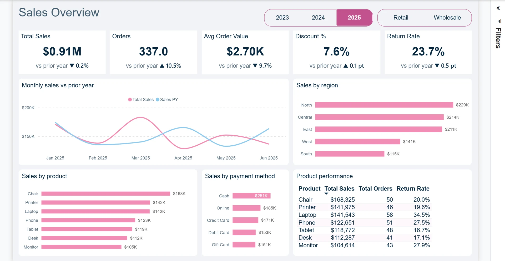

Power BI Dashboard Development
Hire a freelance Power BI developer in Egypt to turn scattered spreadsheets and operational data into a report your team can use.
Discuss your project ↗Built around your business question
A dashboard should answer a business question. I start with the decisions you need to make, your data sources and the people reading the report. That gives us a practical scope for the model, calculations and visual design.
What the work can include
- Power Query transformations and documented source connections
- A semantic model with relationships and agreed KPI definitions
- DAX measures, filters and interactive dashboard pages
- A review of calculations, report files and handover documentation
Sales and retail reporting
A two-page Power BI report connecting sales trends, product performance and returns—so the next question is easier to answer.

Explore the case study ↗Before we start
Can you redesign my existing dashboard?
Yes. I can review the data model, DAX and page layout before we agree the changes. Share the current report and explain what is difficult to use.
What do you need to estimate the project?
Your reporting goal, data sources, required metrics, audience and deadline. Start with anonymized sample data; we agree the scope and fee before development.
Let’s discuss your data.
Share your goal, data sources and deadline. Based in Cairo, I work remotely with clients in Egypt and worldwide.
omarmagdy99860@gmail.com